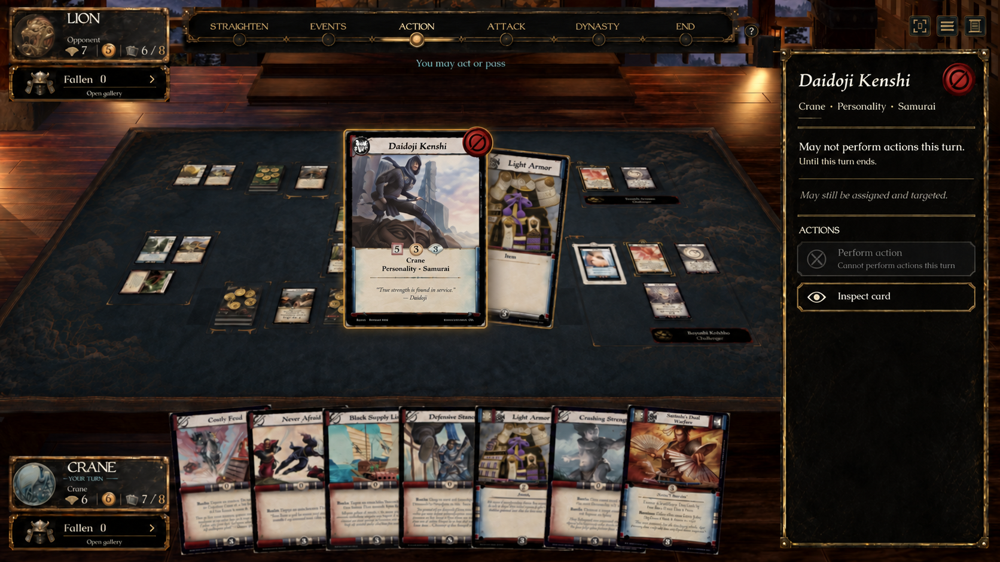
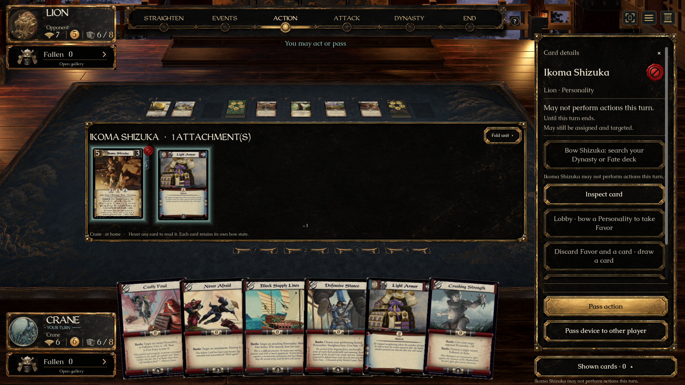

The accepted design uses a vermilion prohibition seal, an explicit restriction and expiry, and full card inspection. The native view uses real Shizuka and Hotako abilities and the game's existing unit spread. The production seal is an imagegen derivative; these are not identical full-screen pixels.


Production sprite at inspector size. The same sprite follows the card's upper-right edge and remains distinct from the lower-right dishonor marker.